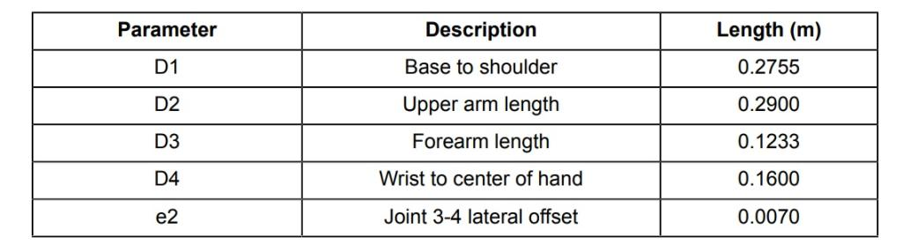

Vamos explicar e demonstrar dois robôs que pertecem à mesma empresa denominada Kinova, um deles é o Mico 6 DOF, e o outro é o Jaco 6 DOF.
Kinova é uma empresa de tecnologia canadense que fabrica plataformas e aplicativos de robótica de serviço para assistência pessoal, e foi fundada em 2006 por Charles Deguire e Louis-Joseph L'Écuyer.
 Charles Deguire.
Charles Deguire.
 Louis-Joseph L'Écuyer.
Louis-Joseph L'Écuyer.
O Braço Robótico Mico é um robô leve, composto por quatro ou seis segmentos interligados. O braço é alimentado por uma bateria de 24 Volts ou plug elétrico padrão. Este robô é a escolha perfeita para uma infinidade de aplicativos de robótica de serviço, especialmente em aplicativos de manipulação móvel. Dá a oportunidade a muitos roboticistas para desenvolver a robótica pessoal, permitindo que sejam mais criativos do que nunca.
O Mico 6 DOF, é constituído por três juntas prismáticas (X, Y, Z) e três juntas revolutas (Roll, Pitch, Yaw), daí o 6 DOF. Faz movimentos silenciosos e muito suaves graças aos seus seis graus de liberdade com rotação ilimitada em cada eixo. A estrutura de fibra de carbono oferece excelente resistência e durabilidade. Pode manusear objetos do dia-a-dia com segurança, utilizando os dois dedos mal acionados. Devido aos seis graus de liberdade, permite uma interação flexível, segura e eficaz em quase qualquer ambiente.
O braço robótico auxiliar Kinova ® Jaco ® melhora a qualidade de vida de todos: os usuários ganham autonomia para atingir seu potencial e os terapeutas ocupacionais podem se concentrar mais na qualidade do atendimento.
Projetado para se integrar totalmente à sua vida diária e para ser montado em uma cadeira de rodas motorizada, nosso braço robótico exclusivo, conhecido em todo o mundo como 'Jaco', está ajudando pessoas com mobilidade limitada ou nenhuma dos membros superiores a alcançar o que antes era impossível.
O braço robótico auxiliar Kinova Jaco apresenta movimentos de 6 eixos correspondentes ao ombro, cotovelo e pulso, permitindo 16 movimentos ao todo para imitar a suavidade e versatilidade de um braço humano em pleno funcionamento. Monte-o em sua cadeira de rodas motorizada e assuma o controle total usando o joystick da cadeira, controle de cabeça, gole e puff, sistema de matriz de cabeça ou quase qualquer outra interface, em combinação.
O Mico 6 DOF (graus de liberdade) pesa 4,6 kg e tem um alcance de 70 cm. O alcance médio contínuo da carga útil máxima é de 2,1 kg. O alcance de pico total / temporário é de 1,5 kg. Ele consome até 100 watts de potência. Potência média de 25W e standby de 5 W.
A velocidade máxima é de 20cm / s, podendo trabalhar em temperaturas de -10 ° C a 40 ° C. É composto por 6 atuadores, dois pulsos, um braço, um antebraço, um cotovelo, uma pata, dois dedos, um ombro, um anel de plástico e um controlador, conforme mostrado na figura.
Estes são os parâmetros geométricos básicos do Mico 6DOF. A diferença do Mico 4DOF são os parâmetros D4 e D5, que não o fazem. Ele também possui parâmetros geométricos alternativos que podem ser usados para descrever a geometria cinemática da configuração de pulso da curva de 6 DOF.

Mico 4DOF.
 Mico 6DOF.
Mico 6DOF.
A cinemática para este tipo de pulso é mais complicada do que para um pulso esférico, devido à geometria mais complicada. Para simplificar a análise, é útil dividir cada um dos dois segmentos curvos do punho em dois subsegmentos de linha reta componentes de igual comprimento, com o segundo subsegmento a um ângulo de 60° do primeiro.
Assim, o braço, do cotovelo para o centro da mão, pode ser analisado como três segmentos de linha reta, o d4b, o d5b e o d6b.
Os parâmetros DH para a parte inferior do braço robótico são mais naturalmente expressos em termos desses parâmetros alternativos.
Apartir dos parâmetros alternativos, obtemos, então, os parâmetros DH (Denavit-Hartenberg).
Configuração do Mico:
Nesta parte prática do Mico fomos ao pasta do peter corke buscar o código do Mico (mdl_mico.m) e corremos o código.
Para mostrar as caraterísticas do robô, isto é, os parâmetros DH, utilizou-se o seguinte comando:
>> mico
Quando observamos as duas tabelas, podemos concluir que os valores apresentados correspondem à junção da tabela dos parâmetros geométricos básicos do Mico 6DOF com a tabela dos parâmetros geométricos alternativos.
No vídeo vemos o Mico na posição de zero ângulos a plotar para a posição com o braço direito e vertical, isto foi conseguido devido a utilizarmos a seguinte sequência de comandos:
>> mico.plot(qz)
>> mico.plot(qr)
De modo a a calcularmos a cinemática direta para uma sequência de parâmetros específicos, utilizámos duas maneira diferentes, observemos então o primeiro exemplo:
>> mico.fkine([0 0 0 0 0 0])
Nesta tabela, observamos que quando os parâmetros q1 a q6 estão a 0, e na terceira coluna os valores a vermelho são o x, y e z nas três primeiras colunas, respetivamente.
Aqui vemos se os valores estão corretos, ou seja, se os valores x, y e z, que estão na tabela anterior, correspondem aos valores x, y e z, da tabela do teach, o que foi possível observar, pelo comando:
>> mico.teach()
Agora observemos para outro exemplo:
>> mico.fkine([0 0 pi/2 0 0 pi/4])
Nesta tabela, observamos que para estes parâmetros, os valores a reprensentados na terceira coluna, x, y e z, são diferentes dos anteriores.
Como vemos no vídeo, os valores x, y e z, não estavam corretos, sendo, por isso, neste exemplo de cinemática direta, necessário colocar os parâmetros q3 e q6 a 90°, e, assim, já conseguimos observar que os valores x, y e z, se encontram corretos, relativamente à tabela anterior, e o robô ficou com uma posição diferente.
Quanto à cinemática inversa, não é possível calcular, visto que, o Mico 6 DOF não apresenta pulso esférico, por esse motivo, a cinemática inversa ainda não é perfeita, devido ao acoplamento entre a posição e a orientação do end-effector.
O JACO pesa 5,2 kg e tem um alcance de trabalho de 90 cm. O alcance médio contínuo da carga útil máxima é de 1,6 kg. O intervalo de pico total / temporário é de 1,3 kg.
O material são conectores de fibra de carbono e o atuador é de alumínio. O power-on médio é de 25 W, o standby 5 W, a velocidade máxima 20 cm / s.
Pode trabalhar em temperaturas que variam de -10 ° C a 40 ° C. Consiste em 6 atuadores, um ombro, um antebraço, um braço, um cotovelo e dois pulsos, uma garra e dois dedos um anel de plástico e um controlador, conforme mostrado na foto.
O grau à prova de água é IPX2 e a sua potência é de 100 watts. A tensão da fonte de alimentação é de 18 a 29 VCC e o alcance da junta (limite do software) é +/- 27,7 círculos
Estes são os parâmetros geométricos básicos do Jaco 6DOF. A diferença do Jaco 4DOF são os parâmetros E2 e D5 em que o Jaco 4DOF faz E2 e o Jaco 6DOF faz D5.
Apartir dos parâmetros alternativos, obtemos, então, os parâmetros DH (Denavit-Hartenberg).
Jaco 6 DH.
Configuração do Jaco:
Para a parte prática do Jaco fomos ao pasta do Peter Corke buscar o código do Jaco (mdl_jaco.m) e corremos o código.
Para mostrar as caraterísticas do robô, isto é, os parâmetros DH, utilizou-se o seguinte comando:
>> JACO
Neste vídeo vemos o Jaco na posição de zero ângulos a plotar para a posição com o braço direito e vertical, isto foi conseguido devido a utilizarmos a seguinte sequência de comandos:
>> jaco.plot(qz)
>> jaco.plot(qr)
De modo a calcularmos a cinemática direta para o Jaco, utilizámos, também, duas maneiras diferentes, observemos então o primeiro exemplo:
>> Jaco.fkine([0 0 0 0 0 0 ])
Esta cinemática direta, só pelo comando, consiguimos observar a sua aparencia com o mico, visto que apresenta 6 DOF como o mico.
Na tabela, observamos que quandos todos os parâmetros se encontram a 0, os valores da terceira coluna são o x, y e z, respetivamente.
Agora vemos se os valores estão corretos, ou seja, se os valores x, y e z, apresentados na tabela anterior, correspondem aos valores x, y e z, da tabela do teach, o que foi possível observar, pelo comando:
>> jaco.teach()
Agora mostraremos para um segundo exemplo, temos:
>> jaco.fkine([0 0 pi/2 0 0 0 ])
Na tabela, é possível observar que para estes parâmetros, os valores da terceira coluna, x, y e z, são diferentes dos anteriores.
Como vemos no vídeo, os valores x, y e z, de modo a ficarem iguais aos que deram como resultado na tabela anterior, necessitámos de mudar os parâmetros q3 e q6 para 90°, sendo posteriormente possível a visualização de valores x, y e z, corretos e, ainda, um robô numa posição diferente, para a correta cinemática direta.
Não conseguimos demonstrar a cinemática inversa, devido a falta de informação deste robô com seis graus de liberdade.
É tudo por hoje muito obrigado pela atenção!
[1] KINOVA MICO™ Robotic arm user guide
[2] KINOVA JACO™ Prosthetic robotic arm user guide
[3] Peter Corke Robotics Toolbox